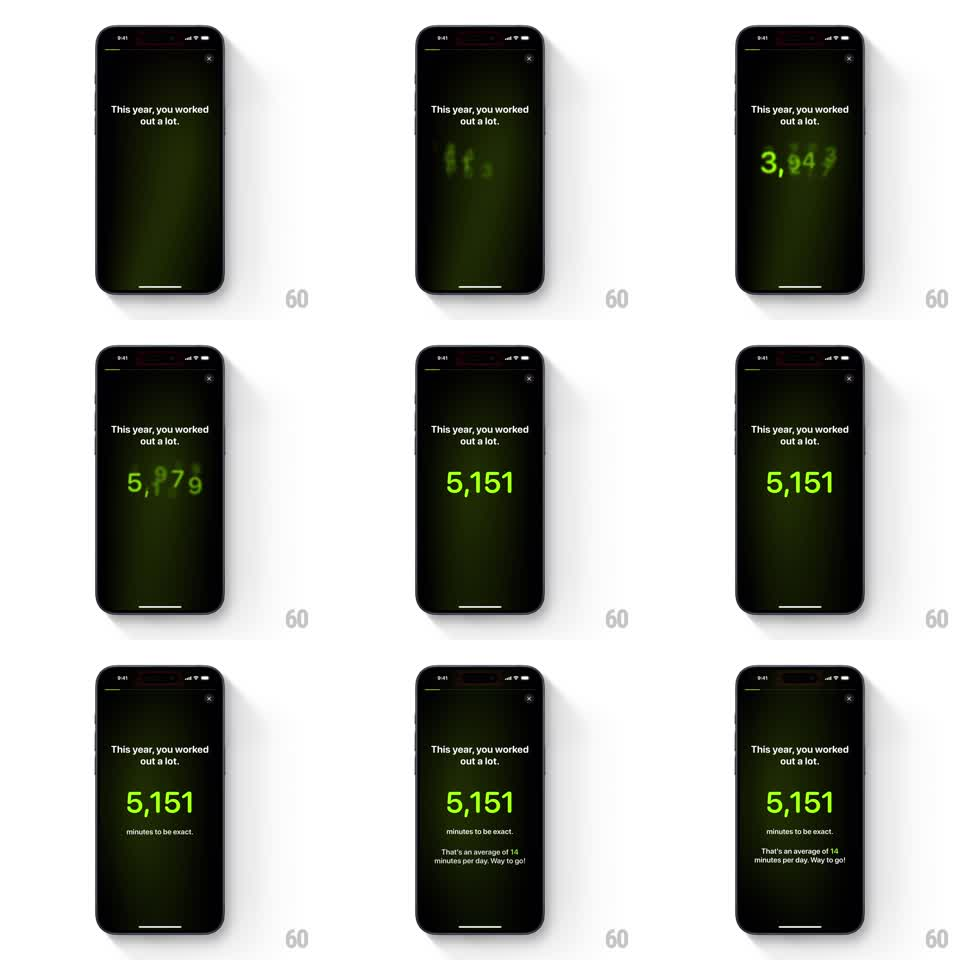

Media
Frame-by-frame

Rebuild this animation 1:1: a fitness wrapped recap card - a giant neon-green minutes count rolls up in a blurred ticker animation, lands sharp, then supporting lines fade in below.

Rebuild this animation 1:1: a fitness wrapped recap card - a giant neon-green minutes count rolls up in a blurred ticker animation, lands sharp, then supporting lines fade in below.
## Integration
Integration: stack-agnostic spec - springs given as stiffness/damping, timed motions as duration + curve; map every value to your framework and animation library of choice.
## Scene
A dark story-style card with a faint green radial glow and a close X at top right. Header text reads "This year, you worked out a lot." Below it, a huge neon-green number ticks up through a motion blur ("3,947", "5,179" mid-roll) and lands sharp on "5,151". Then "minutes to be exact." fades in, followed by "That's an average of 14 minutes per day. Way to go!"
## Motion spec
Pattern: blurred count-up ticker, ~3s total.
- The header fades in first (300ms).
- The counter rolls from 0 to 5,151 over 1.6s (ease-out): digits churn with a vertical motion blur proportional to roll speed, tightening to full sharpness as it decelerates into the final value.
- On landing, the number settles (scale 1.03 to 1, 150ms).
- "minutes to be exact." fades in 200ms later (300ms fade, 8px rise), the average line 250ms after that.
## Calibration
- Blur tracks digit velocity: strongest mid-roll, zero at rest.
- Commas appear live during the roll as digits are added - the formatting is never wrong mid-count.
## Reduced motion
Number fades in at its final value.
## Don't miss
- The two supporting lines arrive in strict sequence, never together.
- The green glow behind the number stays constant - the animation is in the digits, not the background.